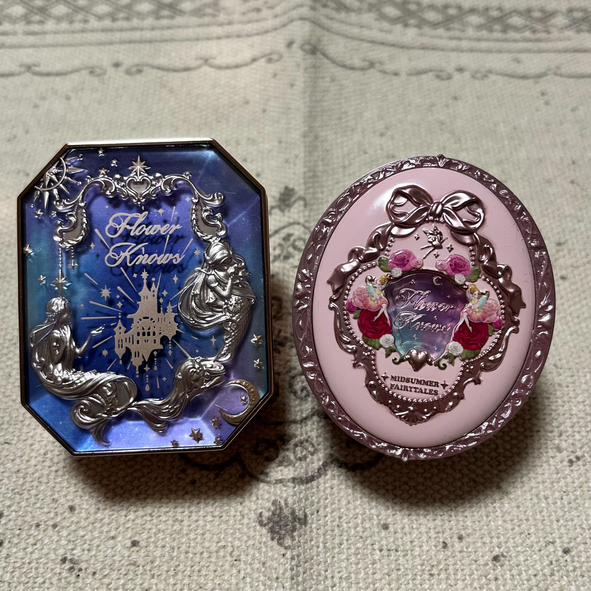
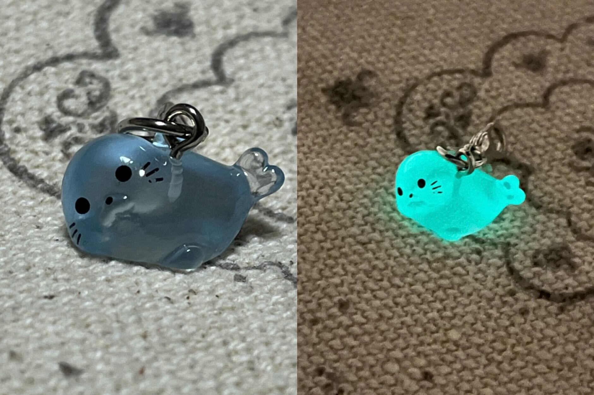
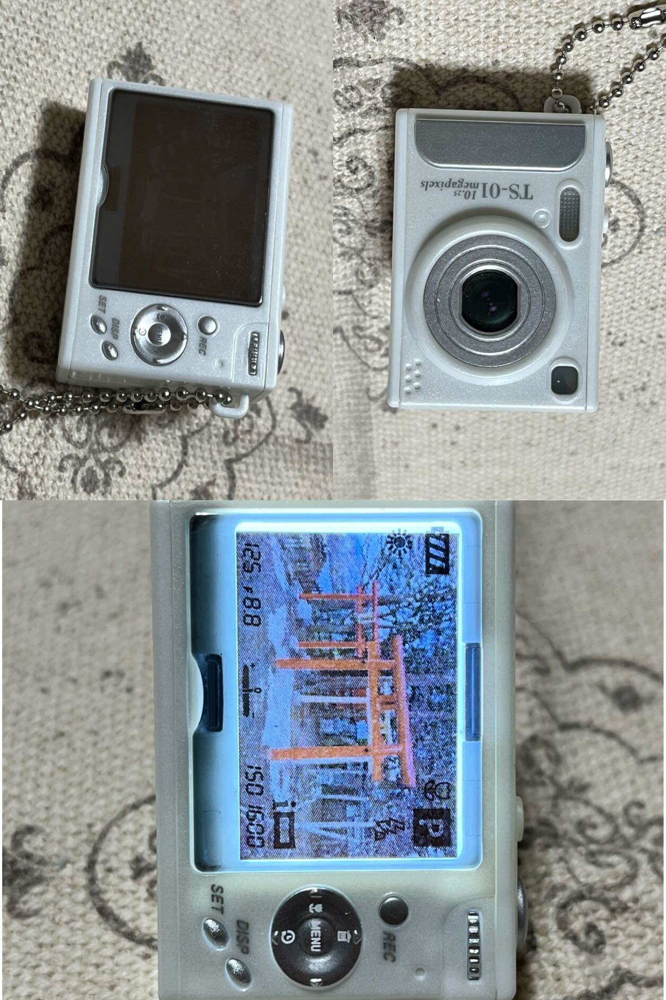
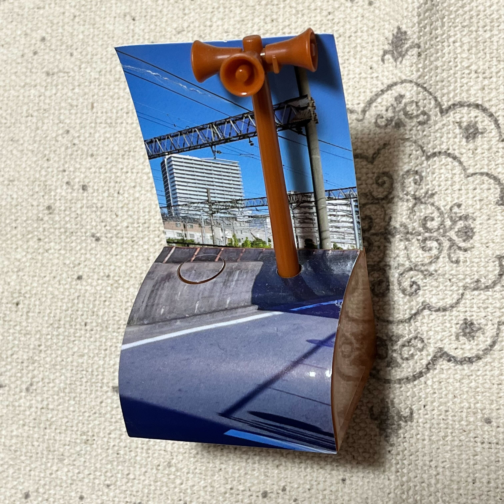
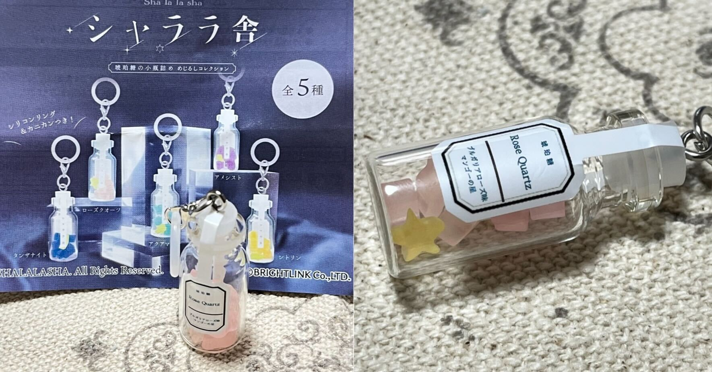

1. Flower Knows アクセサリーケース

とにかくかわいい！さらに小物を入れることもできます。
- 青いほうはメルカリで購入、ピンクのほうは実際にガチャをまわすことができました！
2. 星の海でひかるあざらしたち

かわいくて一目ぼれです。蓄光なので、暗いところで光ります。
- 私の元に来てくれたのは、ほしあつめ、という子です。かわいいのでスマホにつけています。
3. 画面が光る！デジタルカメラフォトフレーム

シャッターを押すと、今写真を撮ったかのように、画面が光ります。
- 最近のガチャは高度なギミックがあって感動です！
4. 鳥の鳴き声

ボタンを押すと、すずめのさえずりが聞こえてきます。
- すずめのかわいらしい声に癒されます。
5. 琥珀糖の小瓶詰め

小瓶の中に、琥珀糖(※食べられません)が入っています。
- ローズクォーツ
ブルガリアローズ味 マンゴーの星